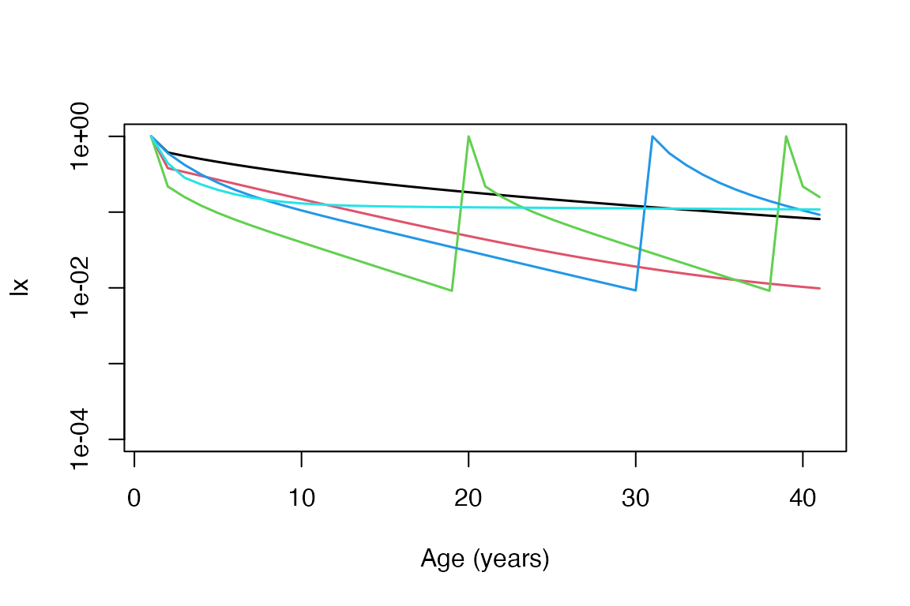

Age-from-stage analyses
Patrick Barks
2023-04-21
Source:vignettes/a04_AgeFromStage.Rmd
a04_AgeFromStage.RmdIntroduction
Regardless of whether the stage classes of a matrix population model (MPM) are based on age, size, and/or ontogeny, it’s possible to obtain age-specific schedules of survivorship (lx) and reproduction (mx) using ‘age-from-stage’ methods, as described by Caswell (2001).
Preliminaries
We’ll start by loading a few packages and a dataset that we’ll be using throughout this vignette.
library(Rage) # load Rage
data(mpm1) # load data object 'mpm1'
mpm1 # display the contents
#> $matU
#> seed small medium large dormant
#> seed 0.10 0.00 0.00 0.00 0.00
#> small 0.05 0.12 0.10 0.00 0.00
#> medium 0.00 0.35 0.12 0.23 0.12
#> large 0.00 0.03 0.28 0.52 0.10
#> dormant 0.00 0.00 0.16 0.11 0.17
#>
#> $matF
#> seed small medium large dormant
#> seed 0 0 17.9 45.6 0
#> small 0 0 0.0 0.0 0
#> medium 0 0 0.0 0.0 0
#> large 0 0 0.0 0.0 0
#> dormant 0 0 0.0 0.0 0Age-from-stage methods with a single matrix population model
This MPM has 5 stage class, and it’s apparent from the
dimnames attribute that the stages are not based solely on
age. Nonetheless, we can estimate age-schedules of survivorship and
reproduction using the functions mpm_to_lx() and
mpm_to_mx() from Rage.
dimnames(mpm1$matU)
#> [[1]]
#> [1] "seed" "small" "medium" "large" "dormant"
#>
#> [[2]]
#> [1] "seed" "small" "medium" "large" "dormant"
# extract U and F matrices
mat_U <- mpm1$matU
mat_F <- mpm1$matF
# calculate lx
lx <- mpm_to_lx(mat_U, start = 1, xmax = 30)
# calculate mx
mx <- mpm_to_mx(mat_U, mat_F, start = 1, xmax = 30)In addition to the relevant matrix components, the
mpm_to_* functions require two extra arguments. The first,
start, is an integer indicating which stage reflects the
‘start of life’. Usually this will be 1, but sometimes we
might want to skip over stages that are propagule (i.e. seed) or
dormant. The MPM we selected begins with a seed stage, so we may want to
start from the second stage, corresponding to start = 2.
The second argument, N is the number of time steps to
calculate over.
# calculate lx
lx <- mpm_to_lx(mat_U, start = 1, xmax = 30)
# calculate mx
mx <- mpm_to_mx(mat_U, mat_F, start = 1, xmax = 30)Let’s take a look at the trajectories.
plot(mx, type = "l", xlab = "Age")
Extending to many matrix population models
Now we’ll extend the basic approach above to many models.
Specifically, we’ll examine trajectories of survivorship for all of the
tree species in Compadre. Compadre is a
database of matrix population models. You can read more about it here, and the associated R
package here. The
Rcompadre package contains a subset of the database that we
can use to demonstrate computations on many models simultaneously.
First, we’ll subset Compadre to our group of interest
(OrganismType == "Tree"). We’ll also remove matrices with
missing values, and limit our selection to matrices with a periodicity
(i.e. transition interval) of 1 year.
library(Rcompadre)
data(Compadre)
# In older versions of Com(p)adre the ProjectionInterval column was called
# AnnualPeriodicity.
if ("AnnualPeriodicity" %in% names(Compadre)) {
Compadre$ProjectionInterval <- Compadre$AnnualPeriodicity
}
comp_flag <- cdb_flag(Compadre, "check_NA_U")
comp_use <- subset(comp_flag, OrganismType == "Tree" &
check_NA_U == FALSE &
ProjectionInterval == 1)Let’s take a look at the species/populations that made the cut.
CompadreData(comp_use)[, c(
"SpeciesAccepted", "MatrixPopulation",
"MatrixTreatment"
)]
#> # A tibble: 7 × 3
#> SpeciesAccepted MatrixPopulation MatrixTreatment
#> <chr> <chr> <chr>
#> 1 Phyllanthus indofischeri Biligiri Rangaswamy Temple Wildlife … Fruit harvesti…
#> 2 Phyllanthus indofischeri Biligiri Rangaswamy Temple Wildlife … Fruit harvesti…
#> 3 Castanea dentata Leelanau Unmanipulated
#> 4 Phyllanthus emblica Biligiri Rangaswamy Temple Wildlife … Time since las…
#> 5 Phyllanthus indofischeri Biligiri Rangaswamy Temple Wildlife … Unmanipulated
#> 6 Manilkara zapota Central Veracruz state Unmanipulated
#> 7 Rhododendron ponticum Ockham Common Nature Reserve UnmanipulatedNotice that there are 3 matrices for the species Phyllanthus
indofischeri, reflecting different treatment groups. Let’s collapse
these replicates down to a single matrix per species, by averaging the
relevant MPMs using cdb_collapse(). We’ll also use the
function cdb_id_stages(), to make sure we’re only
collapsing matrices that have the same stage class definitions.
# add column ID-ing matrices with same MatrixClassAuthor vector
comp_use$stage_id <- cdb_id_stages(comp_use)
# collapse database to single matrix per species * MatrixClassAuthor
comp_collapse <- cdb_collapse(comp_use, "stage_id")
# check species/populations again
CompadreData(comp_collapse)[, c(
"SpeciesAccepted", "MatrixPopulation",
"MatrixTreatment"
)]
#> # A tibble: 5 × 3
#> SpeciesAccepted MatrixPopulation MatrixTreatment
#> <chr> <chr> <chr>
#> 1 Phyllanthus indofischeri Biligiri Rangaswamy Temple Wildlife … Fruit harvesti…
#> 2 Castanea dentata Leelanau Unmanipulated
#> 3 Phyllanthus emblica Biligiri Rangaswamy Temple Wildlife … Time since las…
#> 4 Manilkara zapota Central Veracruz state Unmanipulated
#> 5 Rhododendron ponticum Ockham Common Nature Reserve UnmanipulatedNext, let’s look at the organized stage classes for each MPM. If any of our MPMs include propagule or dormant stage classes, we may want to account for them when calculating lx.
MatrixClassOrganized(comp_collapse)
#> [[1]]
#> [1] "prop" "active" "active" "active" "active" "active" "active"
#>
#> [[2]]
#> [1] "active" "active" "active" "active" "active" "active" "active" "active"
#>
#> [[3]]
#> [1] "active" "active" "active" "active" "active" "active"
#>
#> [[4]]
#> [1] "active" "active" "active" "active" "active" "active" "active" "active"
#> [9] "active"
#>
#> [[5]]
#> [1] "active" "active" "active" "active"Indeed, 1 MPM includes a propagule stage. So let’s use the function
mpm_first_active() to determine the first ‘active’ stage
class for each MPM, which we’ll use to define the start of life.
comp_collapse$start_life <- mpm_first_active(comp_collapse)Finally, we’ll use lapply() to apply the function
mpm_to_lx to each row of comp_collapse. By
default, lapply() will return a vector for each row, and
the length of which is xmax. We can convert the output to
an matrix, with columns representing each row from
comp_collapse using do.call. After that, we’ll
use the function matplot() to plot age-trajectories of
survivorship for each species.
lx_list <- lapply(seq_len(nrow(comp_collapse)),
function(x, comp_collapse) {
U <- matU(comp_collapse$mat[[x]])
rownames(U) <- colnames(U) # ensure row and col names are present
mpm_to_lx(
matU = U,
start = comp_collapse$start_life[x],
xmax = 40
)
},
comp_collapse = comp_collapse
)
lx_array <- do.call(cbind, lx_list)
#> Warning in (function (..., deparse.level = 1) : number of rows of result is not
#> a multiple of vector length (arg 3)
matplot(lx_array,
type = "l", lty = 1, log = "y", ylim = c(0.0001, 1),
lwd = 1.5, xlab = "Age (years)", ylab = "lx"
)